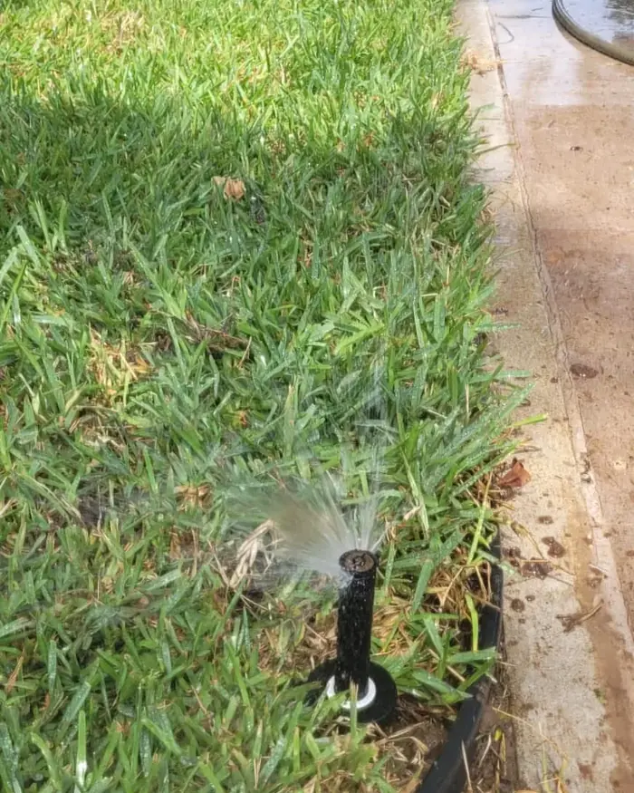

Entre las 5 y las 8 de la mañana. En temporada seca, riega 3 a 4 veces por semana, unos 20 a 30 minutos por zona con aspersor. En lluvias, solo cuando pasen más de 5 días sin lluvia significativa.

01Por qué el riego pesa más que el fertilizante
Cuando el pasto se ve mal, casi todos pensamos en fertilizante. En la mayoría de los casos el problema real es el riego: demasiado, muy poco o a la hora equivocada.
Un San Agustín bien regado y sin fertilizar sobrevive. Uno fertilizado pero mal regado se pone café, ralo o con hongos. El riego es la base de todo.
02Temporada seca en Tampico: noviembre a mayo
De noviembre a mayo llueve menos, y de marzo a mayo el calor puede pasar de 38 °C. Es la prueba más dura para el pasto San Agustín.
| Periodo | Temperatura típica | Riegos por semana | Duración |
|---|---|---|---|
| Noviembre a enero | 18–26 °C | 2 a 3 | 15–20 min por zona |
| Febrero y marzo | 22–32 °C | 3 | 20–25 min por zona |
| Abril y mayo | 28–38 °C | 4 | 25–30 min por zona |
En abril y mayo, en los días más calientes, el pasto puede mostrar estrés en menos de 48 horas sin agua. Revísalo cada mañana durante las olas de calor.
03Temporada de lluvias: junio a septiembre
Si llueve con regularidad, al menos 2 o 3 veces por semana, el San Agustín casi no necesita riego extra. Hay dos trampas:
- Rachas secas dentro de las lluvias. Es común que pasen 7 a 12 días sin lluvia, aun en julio o agosto. Si pasa, riega como en temporada seca.
- Lluvia que no alcanza. Una llovizna de 5 minutos solo moja la superficie. Si no llovió al menos 15 a 20 minutos seguidos, riega.
04Señales de que tu pasto tiene sed
- Color azul grisáceo: el primer síntoma. Riega ese mismo día.
- Hojas dobladas a lo largo: deshidratación moderada.
- Huellas que no se borran: si caminas y la huella sigue ahí después de 30 segundos, necesita agua ya.
- Puntas cafés: daño avanzado, sobre todo a pleno sol. Riego inmediato y fertilización de recuperación.
05Cómo ahorrar hasta 40% de agua
- Riega de madrugada. Al mediodía, la evaporación se puede llevar hasta el 40% del agua.
- Riega profundo y espaciado. Mejor 30 minutos dos veces por semana que 10 minutos seis veces: la raíz crece más y aguanta mejor.
- Programa el riego. Un sistema automático riega a la hora correcta aunque no estés. Así instalamos riego en Tampico.
- Revisa los aspersores. Uno mal calibrado puede regar más banqueta que jardín.
06Preguntas frecuentes
¿Cuántas veces a la semana se riega?
En temporada seca, de noviembre a mayo, 3 a 4 veces. En lluvias, solo si pasan más de 5 días sin lluvia significativa. Con calor extremo, hasta 5.
¿Cuánta agua necesita por metro cuadrado?
Alrededor de 25 a 35 litros por m² a la semana en temporada seca.
¿Por qué se pone café si lo riego?
Casi siempre es encharcamiento y pudrición de raíz, no falta de agua. Revisa el drenaje. También puede ser quemadura de fertilizante u hongos por humedad nocturna.
¿Cuánto tarda en recuperarse?
Con estrés moderado, de 5 a 10 días de riego correcto. Si el daño es extenso, de 3 a 6 semanas con riego y fertilización de rescate.